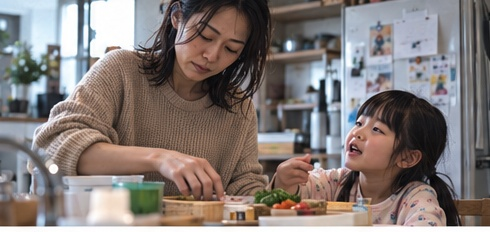
01 / 0–3秒
家族のことが、いつも先。
子どもの声と食器の音。忙しい朝を短く見せる。
日常への共感を描くA案と、鏡の中の20代の自分に導かれるB案。
両案とも、サロンでひと息ついたあと、家に戻って子どもと笑い合う結末です。
育児で自分のことが後回しになり、鏡で疲れに気づく。丁寧な迎え入れとケアを経て、いつもの暮らしへ。
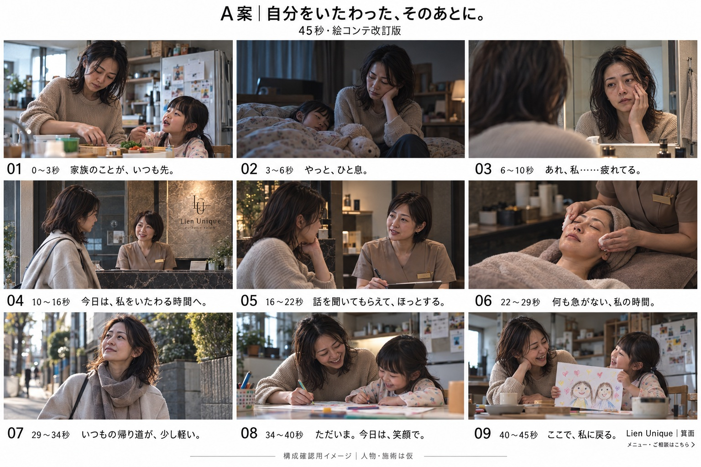

子どもの声と食器の音。忙しい朝を短く見せる。
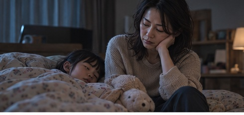
寝かしつけのあと、肩を落として小さく息を吐く。
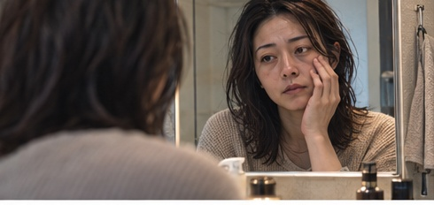
鏡の顔を見て手が止まる。心の声「あれ、私……疲れてる」。
スタッフの「いらっしゃいませ」で安心感を作る。
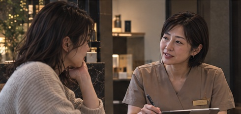
同じ目線で話を聞く。急かさない間を置く。
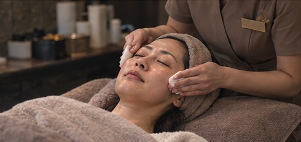
目を閉じて自分をいたわる時間。施術内容は確認後に調整。
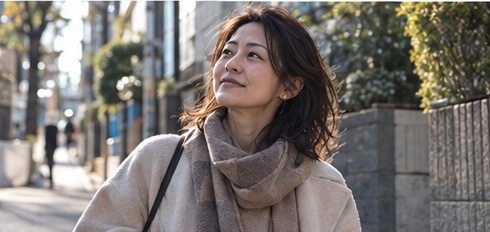
自然な外光。肩の力を抜き、いつもの道を帰る。
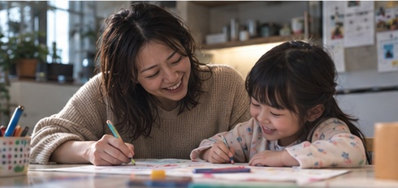
子どもとお絵描き。何気ないやり取りから自然に笑う。
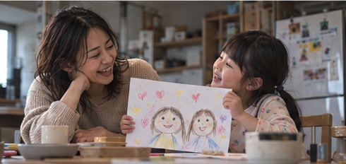
子どもの絵を見て笑い合う。店名と案内先を表示。
鏡の中だけに20代の自分が現れ、その笑顔を追ってサロンへ。入店後は現在の本人に戻り、安心した表情から日常へつなぎます。
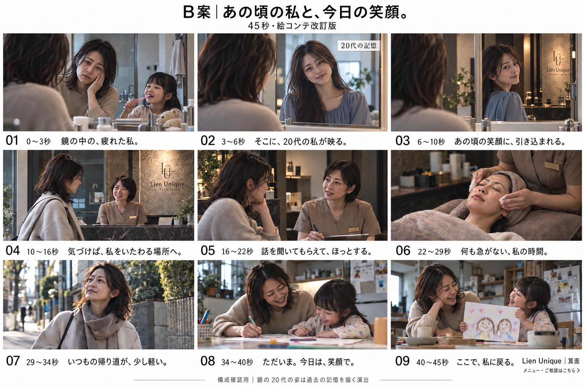
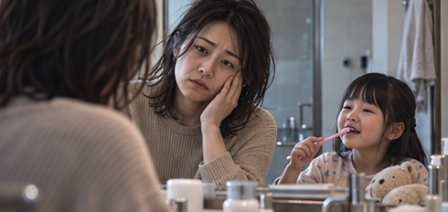
鏡の中の疲れた顔に気づく。生活音が遠のく。
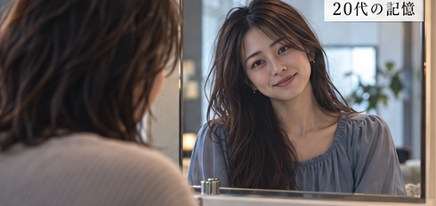
現在の本人はそのまま、鏡の中だけ20代の姿へ。過去の記憶の演出。
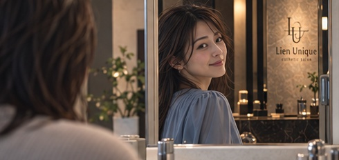
昔の自分が微笑んで振り向く。その視線を追うようにカメラが鏡の奥へ進む。
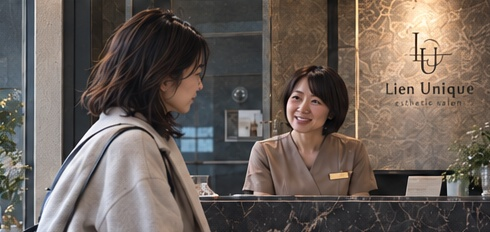
スタッフの「いらっしゃいませ」で安心感を作る。
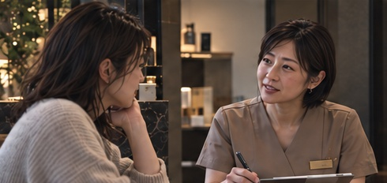
同じ目線で話を聞く。急かさない間を置く。
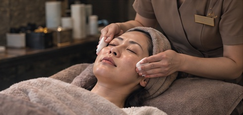
目を閉じて自分をいたわる時間。施術内容は確認後に調整。
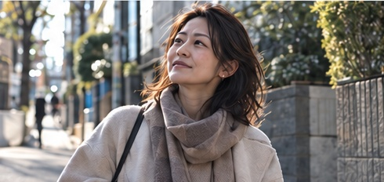
自然な外光。肩の力を抜き、いつもの道を帰る。
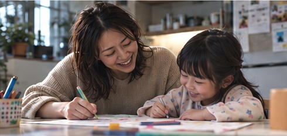
子どもとお絵描き。何気ないやり取りから自然に笑う。
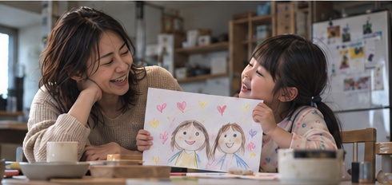
子どもの絵を見て笑い合う。店名と案内先を表示。
肌を過度になめらかにせず、髪の乱れや自然な表情を残す。店内は濃い大理石とブロンズを基調に、金色の光を抑え、落ち着いた実写CMの質感を目指します。
16秒以降は両案共通。目線を合わせた相談、丁寧なケア、帰り道、子どもとのお絵描きへ。最後は店名と案内先を表示し、笑顔の余韻で締めます。